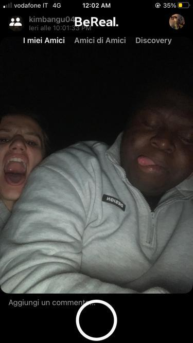
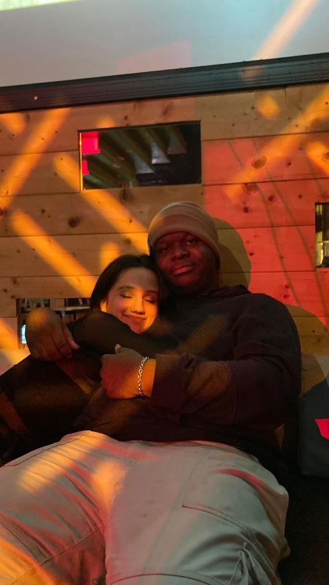

AUGURIIIII TILDEEE
truckk avevi ragione era un sito
ho voluto provare a fare qualcosa di diverso
SPERO TI PIACCIA .
è passato un anno ed eccoci qua
hai 19 anni adesso abbbiamo la stessa eta ,
adesso sei lontana da me e mi manchi tanto tanto vorrei poter essere li e abbracciarti e colpirti in testa per le cose che dici ogni tanto
ti voglio tantissimo bene, quest'anno è stato molto difficle per te ma io sono veramente fiero di come stai andando
anche dopo le cadute ti sei sempre rialzata e hai continuarto ad andare avanti; sono veramente felicie di vedere che stai inseguendo il tuo sogno
e appena potrò veramente verrò li da te a farti una sorpresa.
So che sono difficile da capire ogni tanto e che sembra che io non ci tenga a te ma questo non è vero anzi sei la mia persona preferita con te tutto è piu bello
molte volte mi fai arrabbiare perchè dici cose assurde tipo che non siamo più amici BASTA DIRLO lo saremo per sempre ,
anche nella prossima vita e in quella dopo se ci sarà.
Mi dispiace tantissimo non poter essere li con te avrei volutao tantissimo farti gli auguri di persona
questo è il tuo primo compleanno via penso e mi spiace che non siamo li con te però anche se non sono li con te fisicamente sono li in un altra maniera .

sono passati tanati anni 5 per l'esattezza e non c'è mai stao un giorno in cui ho pensato di aver sbagliato ad aprirmi con te,
anzi sono molto felice di averlo fatto so che ognoi tanto pensi che io nasconda le cose anche a te,
ma io non lo faccio con cattiveria o perche non voglio farlo
è solo che molte volte ho notato che te arrivi alle cose prima di me ci sono volte in cui il mio pensero non è del tutto formato ma te gia capisci comke mi sento
e io mi stupisco ogni volta tanto anche;
questo per dire che sei una persona speciale almeno per me lo sei tantissimo
Questa cosa la ho detta tante volte però è vero ai sei stata la prima persona che mi ha visto piangere al di fuori della mia famiglia hahahahahah ,
non piangevo da 2 anni almeno è stato strano ma bello anche se te mi trattavi da bambino hahahah (va che sono più grande di te )

sei molto piu che speciale, sei un regalo che veramente ringrazio di aver ricevuto
so di farti arrabbiare molto pero veramte mi spiace che dica cose che ti fanno stare male
o che ti deludano se ti conosco e ti conosco abbastanza bene nella tua testa avrai pensato che non ti importa di quello che penso e dico
ma so che non è vero so che a te importa quello di cui io penso di te e apprezzo moltissimo il fatto che te dia peso alle mie parole
ogni tanto penso che ti rompa un po le scatole però non ne posso fare a meno mi piace parlare con te tanto ,
certo non mi piace essere chiamato ricchione però so che quello è il tuo modo di dimostrare affeetto
mi colpisci tante volte ma te tiri proprio la mia pelle oppure mi tiri gli schiaffetti però so che lo fai perche soi vuoi bene anche se odi ammetterlo ,
so di mancarti e a me manchi tantissimo

Te sei una persona speciale molto anche sei molto forte e soprattutto hai tatto sei sensibile verso le persone
e anche se dici di non voler dimostrare affetto lo fai e io sono felice ormai penso di conoscerti abbastanza bene e adoro passare il tempo con te
Mi chiedi spesso perchè ti voglio bene.
bhe è semplice per me rispondere ti voglio bene perchè sei te ,perchè con te mi sento bene ,riesci a tirare fuori il meglio di me ,
riesci a farmi sorridere anche qyando magari sono tristissimo ,riesci a capirmi senza che io debba dire qualcosa ,riesci a darmi sentire bene, accettato ,
non sbagliato ,compreso e mi fai stare bene con me stesso ,
quando sono con te sento che posso veramte respirare e lasciarmi andare sento che se voglio piangere posso farlo se voglio ridere posso farlo se voglio strare in silenzio posso farlo
ps (mi piace essere cullato hahahahah non ci credo che lo sto ammettendo) vorrei fossi li con te mi manchi tanto e spero di vederci pressto ti voglio tanto bene
spero di far sentire anche a te quello che te mi fai sentire perchè è veramte bellissimo.
AUGURIII tilde , ti voglio un mondo di bene e te ne vorro per sempre
vorrei poterti abbracciare in questo momento
non sai quanto vali per me e quanto io tenga a te
è davvero strano che te non ci sia più come prima e devo dire che è difficle
vorrei poterti rivedere presto ma non riesco ,vorrei essere li con te e festeggiare con te ridere e scherzare ancora
scusa se sono un "coglione" di tanto in tanto ma veramente io ci tengo tantissimo a te e vorrrei che
te lo capisssi e non mettessi mai in dubbio quetsa cosa
però io ti voglio tantissimo bene e
mi manchi tanto tanto e spero di rivederti presto ♥️♥️